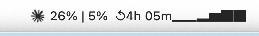

ClaudeWatch for Mac
Claude cuts you off mid-project and you never see it coming. ClaudeWatch puts your session and weekly usage right in the menu bar — always visible, always current.

Claude slows down. You had no idea you were close to the limit.
It's buried in settings, three clicks deep. By then you've already lost your flow.
The work stops. You wait. Again.